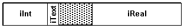
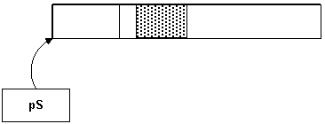
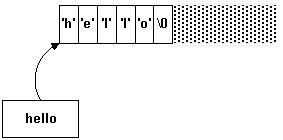

|
| |
The C++ language, following its foundation in C, is close to the machine architecture. This allows applications to be implemented efficiently, but, especially for developers new to the language, presents some issues of which you need to be aware. This topic reviews the basic language features from this perspective, and discusses how the resulting issues are handled.
|
An int is usually implemented as the natural machine
word size of the particular implementation. This is 32 bits in most modern
machines. It was 16 bits in older machines, and in a few machines it may even
be 64 bits.
Similarly, a pointer (a void*, for instance) is
usually implemented as a machine word but, in some machines with special
architectures, a pointer may be more complex.
It is assumed that the Symbian platform is implemented on a machine
with a 32-bit or greater machine word, and 32-bit pointers. The types
TInt and TUint are typedefed onto the
built-in int and unsigned int types, and are
guaranteed to be at least 32 bits.
When you need a specific size, regardless of implementation, use a sized type. Several of these are available:
|
|
Apart from classes, C++ inherits from C various other types of compounding.
A struct maps an area of memory:
struct TEg
{
TInt iInt; // offset 0, 4 bytes
TText8 iText; // offset 4, 1 byte
// 3 wasted bytes
TReal iReal; // offset 8, 8 bytes
} // total length = 16 bytes

Structures are regarded as T types: that is they may
not own heap-allocated resources such as C type classes.
An array contains many built-ins or other types
TInt a[32]; // 32 TInts, = 128 bytes
S b[3]; // 3 S’s, = 48 bytes
The main disadvantage of using C++ arrays is that there is no automatic checking of index values. For this reason, and to support more complex containers, C++ has evolved the Standard Template Library (STL). The Symbian platform does not use STL, but provides its own range of efficient container classes, for fixed, dynamic, and associative arrays. For details, see Dynamic Arrays.
|
A pointer is a memory address. If you can take the address of an object, then you can refer to it by pointer:
S* ps; // pointer to an S
ps=&s; // take address of existing S
A pointer is a 32-bit machine word, and could point to anything.

The specifier is placed next to the type rather than the name.
There is often a need to refer to memory as anything: for this, a
void* pointer is used in C++. In the Symbian platform, a
TAny* may be referred to instead. A TAny* is a
pointer to anything.
|
In C++, the basic string is an array of characters:
char* hello="hello";
This statement does two things: firstly, it sets aside six bytes of
memory containing the characters 'h', 'e', 'l', 'l', 'o', '\0'. Secondly, it
sets the pointer hello to contain the address of the first of
those bytes.

Functions accessing the string rely on this address as its starting
point, and the terminating \0 to indicate its end. Functions which
manipulate the string must either deliberately not extend it, or must have some
cue as to the amount of memory reserved for the string (beyond the trailing
\0) so they know how much it can be extended. This leads to an
awkward programming style, and every C++ library provides a way to manipulate
strings more elegantly. Symbian’s solution is
descriptors: these are introduced in
Descriptors.
|
Functions are a piece of code which can be called and executed from anywhere else in a program. The stack is used to pass parameters and to contain local variables. The stack is often augmented by machine registers, especially in a register-rich processor such as the ARM, so that memory is often not used. But, conceptually, there is a stack, and for the purposes of this explanation it is convenient to consider the stack as if it were implemented entirely in memory.
Parameters are passed by copying or evaluating onto the called function’s stack frame. It is bad practice to pass large parameters, such as an entire struct — or, in fact, anything beyond two machine words in size — because this involves excessive copying. Instead, a pointer or a reference should be used to pass the address, instead of the data itself.
In a multi-tasking system such as the Symbian platform, each thread has its own stack, which is a pre-allocated area of memory. Each function then allocates its own frame from the stack on entry, and de-allocates it on exit. The advantage of the stack mechanism is that allocation and de-allocation are very rapid indeed — just a couple of instructions. Also, the lifetime of any variable on the stack is very well defined: it is the lifetime of its owning function — or, in fact, its owning block, since functions may have blocks within them.
When a function returns, its stack memory is still there: it is just not allocated. The stack memory will be re-used by the next function that is called. A potential source of error is to allocate an object on a function’s stack frame, and then return a pointer to it:
TEg* foo()
{
TEg s;
TEg* ps=&s;
return ps; // !! error !!
}
This pointer will not be valid for long, because the memory will be re-used when the next function is called. You should never allow this to happen. This error is so obvious that a compiler will trap it. But it can occur in more subtle forms:
foo(CContainer* aContainer)
{
TEg s;
TEg* ps=&s;
aContainer->iMember=ps;
}
These cannot be trapped so easily.
|
Each thread also has a heap. You can allocate and de-allocate objects on the heap at will, and refer to them by pointer. The benefit of a heap is that the lifetime of an object is entirely within your control. This power comes with responsibility: you must not forget to de-allocate objects once you have finished with them, and you must not use pointers to objects that have been de-allocated.
Copyright ©2002 Symbian Ltd. 6.1-00174 |
|